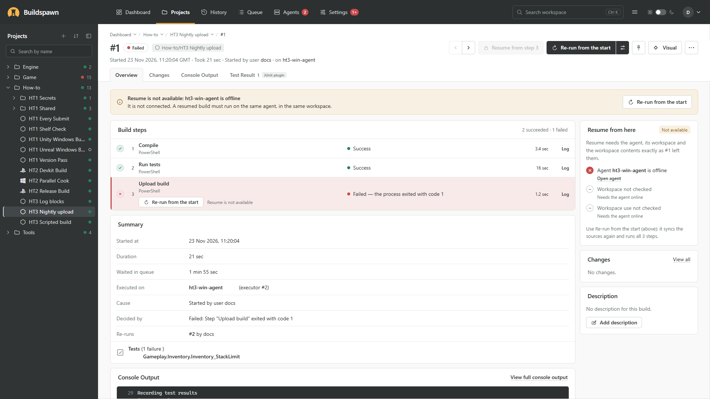
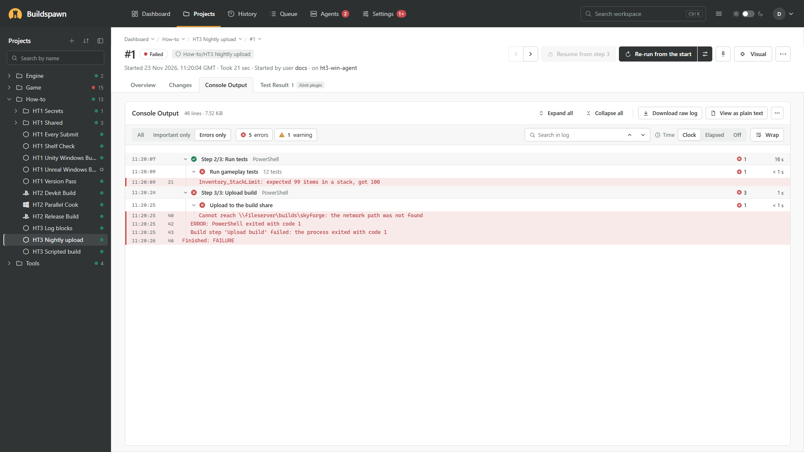
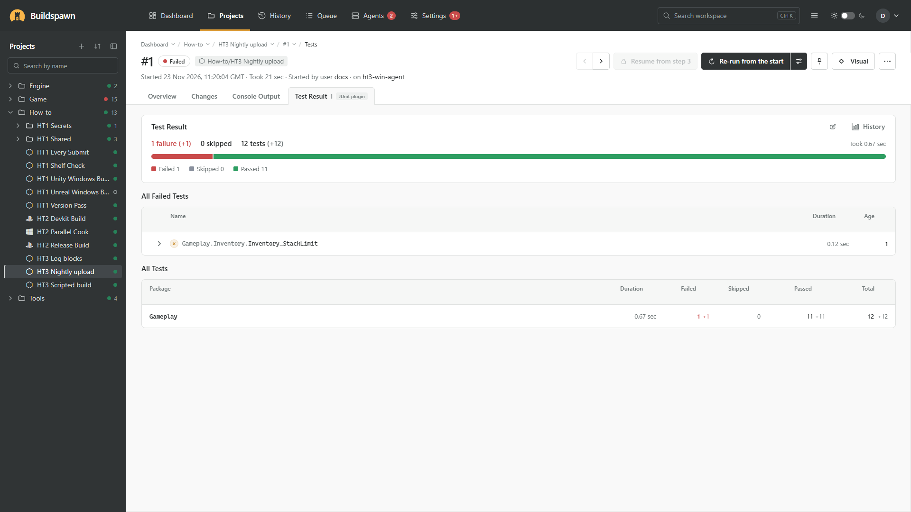

Find out why a build failed
Go from a red build to the line, the test or the change that broke it in a few clicks.
Before you start
- You can see the project: you need at least the Project viewer role on it.
- A build has failed. In the project tree on the left, a build configuration with a red dot has a failed last build.
Steps
- Open the failed build. Click the build configuration in the project tree, then the build number with a red Failed label in its History list. The Failed button above that list hides the builds that passed. The History page in the top bar lists the builds of every project.
- On the Overview tab, look at Build steps. The failed step has a red band and a red cross, with the reason beside it, for example Failed — the process exited with code 1.
- Read Decided by in the Summary card. It says what made the build fail, for example Failed: Step "Upload build" exited with code 1.
- Click Log on the failed step. The Console Output tab opens at that step.
- Click Errors only in the console toolbar. You now see only error lines, inside the blocks they belong to.
- Press E to jump from one error to the next, and W for warnings. Click All to see the lines around an error again.
- To find something else, click Search in log and type a word, such as a file name or an error code like
C4996. Move between matches with the up and down arrows beside the box. - If the build has a Test Result tab, click it. All Failed Tests lists the tests that failed. Click the arrow beside a test to read its error message and stack trace.
- Click the Changes tab to see the changelists or commits that are new in this build. When a test that passed yesterday fails today, the cause is often in this list.



If the failed step has a name from your script
Steps that print ::group:: lines show their own blocks inside the step. A failed block opens by itself, so the error is often in view as soon as you open the console. Failed steps also write the line Failed: Step "Name" exited with code N, and Decided by on the Overview repeats it. If a script set a status text, it shows beside the result. See The build name and status text.
Check it worked
You found the cause when you can say three things:
- Where it failed: the step and block, from the Overview and the console.
- What failed: the error line or the failed test with its message.
- Why now: the change in the Changes tab, or "nothing changed" (then it is the machine or the network, see below).
Click a line number in the console to put a link to that line in the address bar. Send it to the person who can fix the problem.
Troubleshooting
| Problem | What to do |
|---|---|
| Errors only shows nothing useful. | Some tools write errors as plain lines. Click All, open the failed step and read its last lines, or search for error. Make your own scripts print ::error:: lines; see Organise your build log with blocks. |
| The Changes tab says No changes. | The build used the same changelist or commit as the build before it. The info line in the header still shows which one. If the code did not change, compare the agent, the parameters and the time with the last good build. |
| The same code passes on a re-run. | The failure is flaky: a network share, a device kit or a crashing tool. Add Retry on failure to that step. See Resume and retry. |
| There is no Test Result tab. | The step did not publish a test report. Set Test reports on the step, for example reports/*.xml. See Runners. |
Next steps
- Re-run a failed build from the failing step once the problem is fixed.
- The build console: every filter, key and tool in the console.
- Changes, artifacts and tests.
- Watch the server from a terminal: list failed builds without a browser.
- Compare two builds: find what differs between the last good build and the failed one.
- The Statistics tab: see whether the failures started at one date or one agent.